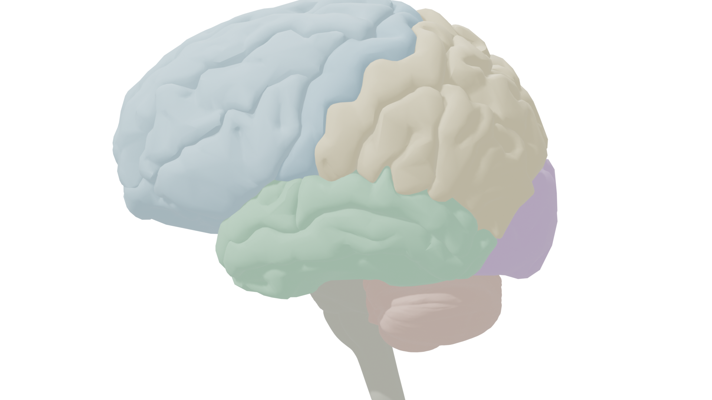

Left lateral view — frontal (blue), parietal (gold), temporal (green), occipital (purple), cerebellum (terracotta)
Structures
Frontal Lobe
Superior frontal gyrus, middle frontal gyrus, inferior frontal gyrus, precentral gyrus (primary motor cortex), orbital gyrus
Parietal Lobe
Postcentral gyrus (primary somatosensory cortex), supramarginal gyrus, angular gyrus, superior parietal lobule
Temporal Lobe
Superior temporal gyrus, middle temporal gyrus, inferior temporal gyrus, fusiform gyrus, parahippocampal gyrus
Occipital Lobe
Occipital lobe (primary visual cortex)
Limbic & Deep Structures
Hippocampus, amygdala, thalamus, hypothalamus, cingulate gyrus, insula, corpus callosum
Brainstem
Pons, medulla oblongata, midbrain
Cerebellum
Cerebellar hemispheres